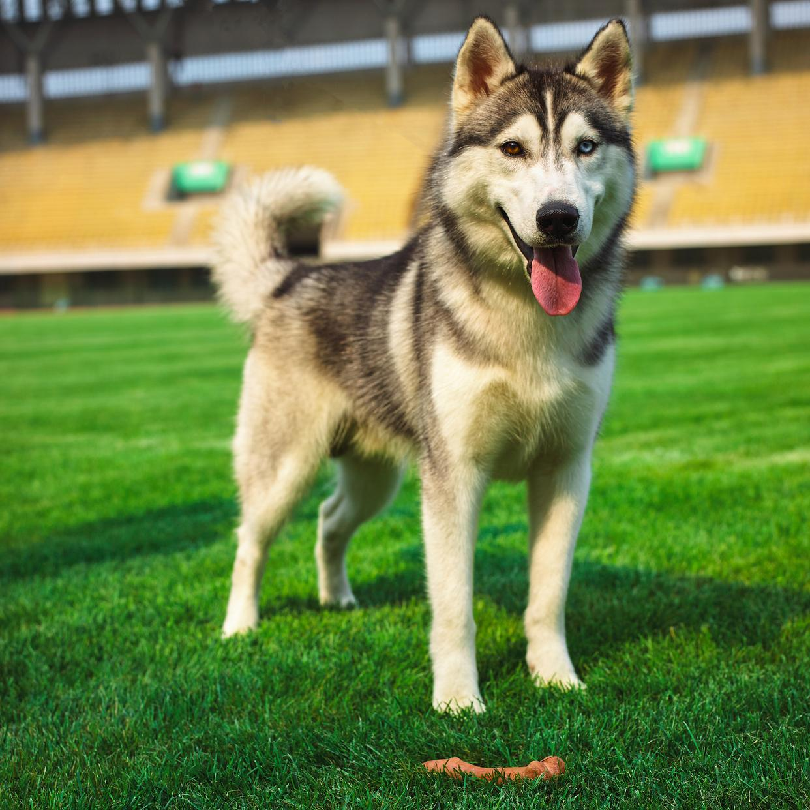
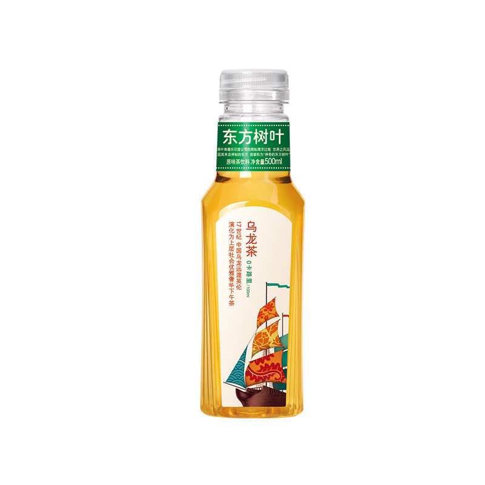
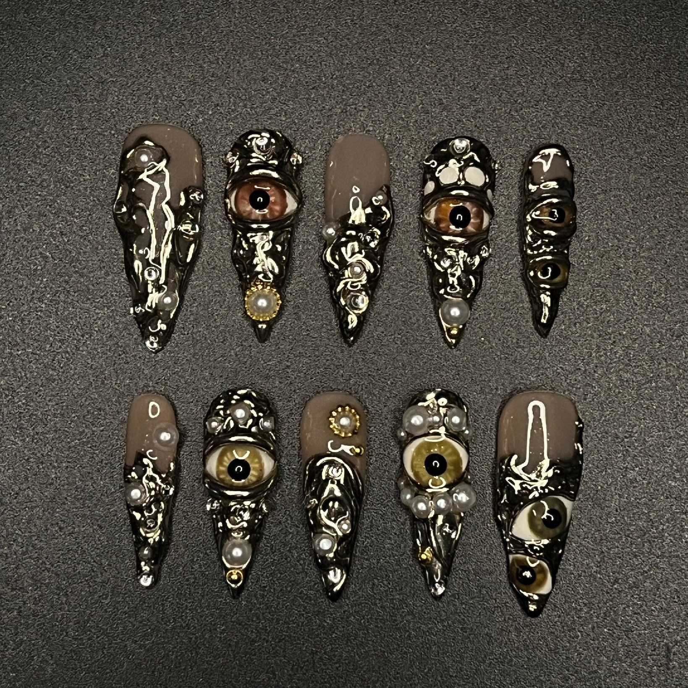

Case 01 / minimax
MiniMax Brand Rewrite
01
视频结果对比
02
用户输入与生成图片
用户输入文本 + 素材
requirement.txt.txt打开
参考视频生成一条新的视频，把视频里所有"minimax"字母换成"MetaX"，把视频中的模特换成猫咪
生成图片
03
H3 Context IR / AI Agent Evaluation
每个 case 按版本组织结果：原视频、depth video、参考原视频生成结果、参考 depth video 生成结果、用户输入、生成图片、分析结果和发送给 H3 的实际 Prompt 都在同一页对照查看。
Case 01 / minimax
参考视频生成一条新的视频，把视频里所有"minimax"字母换成"MetaX"，把视频中的模特换成猫咪
Case 02 / animal

参考视频生成一条新的视频，三只哈士奇在户外草坪上表演。
Case 03 / dance
参考视频生成一条新视频，一位欧美女性在户外篮球场上跳舞
Case 04 / milk

参考视频生成一条新的视频，把牛奶换成东方树叶饮料
Case 05 / nail-5
将参考视频里的美甲的图案替换成素材图片里的美甲图案，人物的装扮和场景和美甲风格一致。

Case 06 / nail-6
将参考视频里的美甲的图案替换成素材图片里的美甲图案，人物的装扮需要和美甲风格一致。